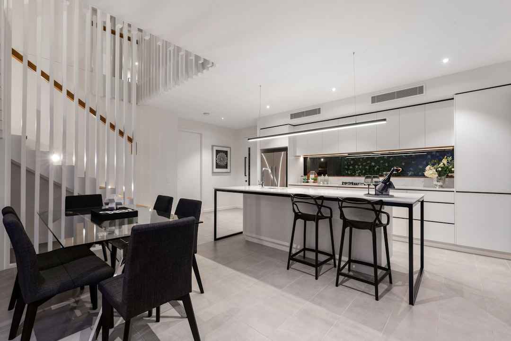

Start with scope, licence checks and timing. The published guide lists kitchens at $25,000 to $60,000+, bathrooms at $22,000 to $35,000+, extensions and full renovations from $150,000+, and full home renovations at $150,000 to $500,000+ depending on scope. It also states a 48 hour quote response target and 2 to 3 obligation-free quotes from QBCC licensed builders.
For homeowners comparing renovation builders brisbane options, the useful starting point is scope clarity, builder credentials, approval risk and whether each quote prices the same work.
Renovation Builders Brisbane Explained
Renovation Builders Brisbane presents its offer around QBCC licensed specialists for kitchen, bathroom and full home renovation work. Treat that as a screening baseline, then ask for licence details, comparable past projects, a clear scope and a quote that separates inclusions from exclusions.
The work type changes the questions. A bathroom refresh turns on layout, fixtures and wet area sequencing. A full home renovation may involve structural modifications, kitchen and bathroom upgrades, flooring, electrical rewiring, plumbing updates, painting and fixtures. A Queenslander project may add VJ walls, timber restoration or raise and build-under planning.
Who this applies to
This guide suits Brisbane owners who know they want to improve an existing home but are still deciding between a focused room upgrade, an extension, a character home project or a larger full home renovation.
It is less useful for anyone seeking a final fixed price before inspection, drawings and specifications. The published guide gives typical ranges for several categories and custom quotes for Queenslander and heritage work, which means the quote should respond to the actual home, structure and approval context.
- Use a room by room brief when layout and finishes are already clear.
- Use a design and documentation path when structure, footprint or heritage settings may affect the job.
- Ask each builder which assumptions could change the contract price.
Cost signals and quote inputs
The clearest planning figures are category ranges. Kitchens are listed at $25,000 to $60,000+, bathrooms at $22,000 to $35,000+, extensions from $150,000 and full home renovations from $150,000+. The same guide describes standard 3 to 4 bedroom home renovations at $250,000 to $450,000 and raise and build-under projects from $650,000.
Before requesting quotes, write down the affected rooms, whether walls are moving, whether plumbing or electrical layouts are changing, the expected finish level and any character features to retain. Quote comparison works best when each builder prices the same brief.
Ask for allowances, exclusions, approval responsibilities, likely sequencing and variation rules. A cheaper headline number can be misleading if design, certification, fixtures, structural work or site preparation sit outside the quote.
Approvals and home type
The published guide says council approval is required for renovations that alter the building footprint or structure, and that a building permit is needed for structural alterations, extensions and significant layout changes. It also says internal-only renovations typically do not require planning approval, while heritage overlay properties need additional approval.
The first approval question is practical: is the work cosmetic, structural, an extension, a significant layout change or linked to a heritage setting? For Queenslanders, ask how the builder handles VJ walls, timber restoration, raise and build-under work and modern comfort upgrades.
For site specific advice, the guide recommends speaking with a building certifier or town planner. A builder can explain construction implications, but approval advice should match the site, drawings and assessment pathway.
Timing and decision points
The published quoting process asks owners to submit project details, receive 2 to 3 obligation-free quotes within 48 hours, then compare builders before choosing. That is the quote step, not the full project duration.
For delivery timing, the guide says full home renovations typically take 5 to 12 months including approvals. It lists feasibility at 2 to 4 weeks, design and documentation at 2 to 4 months, pre-construction at 2 to 4 weeks, kitchen renovations at 4 to 8 weeks and bathroom renovations at 2 to 4 weeks.
Use those ranges to ask when design decisions lock in, who orders fixtures, which rooms will be unavailable and who manages the certifier, town planning or council interface. For another local overview, see this Brisbane renovation guide.
Checks before appointing
Ask for QBCC licence details, examples similar to your home type and a written explanation of what is included. The published guide states that all listed builders are QBCC licensed and refers to HIA and Master Builders Queensland memberships as part of its screening criteria.
Communication matters on full home work because multiple trades and milestones may be involved. Before signing, compare the same scope, same drawings where possible, same finish assumptions and the same responsibility for approvals. The best fit is the builder whose credentials, quote detail and process match the scale of the renovation.
- Define scope. List affected rooms, structural changes, finish expectations and approval questions before requesting quotes.
- Check credentials. Confirm QBCC licence details and ask for comparable Brisbane renovation experience.
- Compare inclusions. Review exclusions, allowances, approval tasks and variation rules before choosing.
- Plan timing. Ask how feasibility, documentation, pre-construction and construction will be scheduled.
| Project path | Published cost signal | Questions to ask |
|---|---|---|
| Kitchen or bathroom | Kitchen $25,000 to $60,000+, bathroom $22,000 to $35,000+ | Are layout, plumbing, fixtures, wet areas and finishes specified? |
| Extension or full renovation | Extensions from $150,000, full renovations from $150,000+ | Who manages design, approvals, structural work and trade coordination? |
| Queenslander or heritage work | Custom quote | How will character features, overlays, approvals and modern upgrades be handled? |
Common questions
How much should I budget for a Brisbane renovation? The published guide lists kitchens at $25,000 to $60,000+, bathrooms at $22,000 to $35,000+, and full home renovations from $150,000+. Larger full home projects are described at $150,000 to $500,000+ depending on scope.
Do all renovations need council approval? No. Internal-only renovations typically do not require planning approval, but structural changes, extensions, significant layout changes and heritage overlay properties can need approvals or permits. Ask a building certifier or town planner about your site.
How long does a renovation take? The published guide says kitchens take 4 to 8 weeks, bathrooms take 2 to 4 weeks, and full home renovations typically take 5 to 12 months including approvals.
What should I compare between quotes? Compare scope, drawings, inclusions, exclusions, allowances, approval tasks and variation rules. Missing fixtures, design work or approval responsibilities can change the true cost.
This guide covers Brisbane renovation planning, quote comparison, approvals, costs, timing and builder selection from the supplied facts.